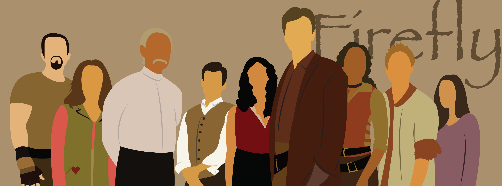
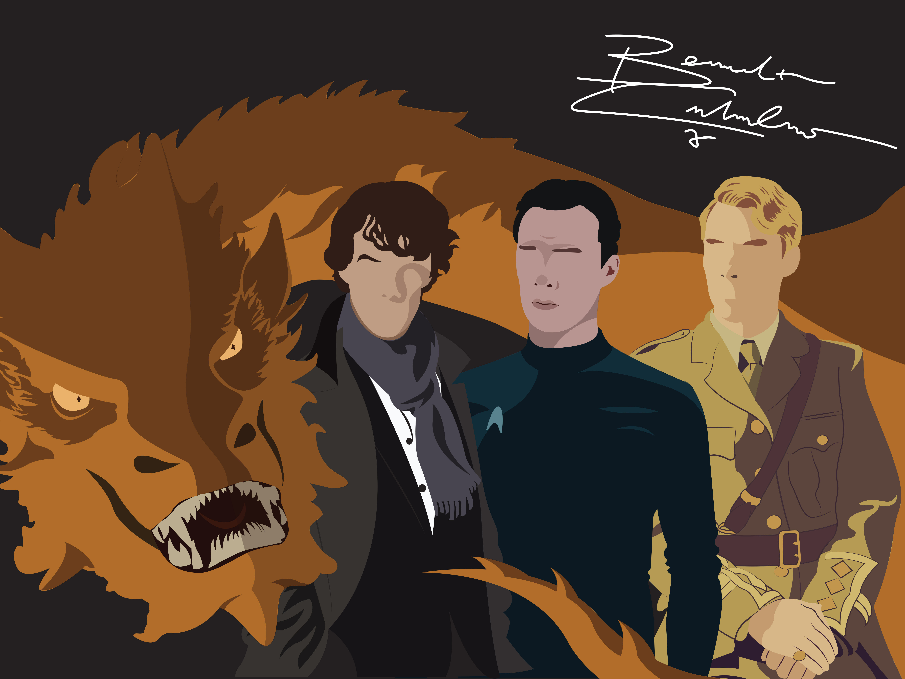
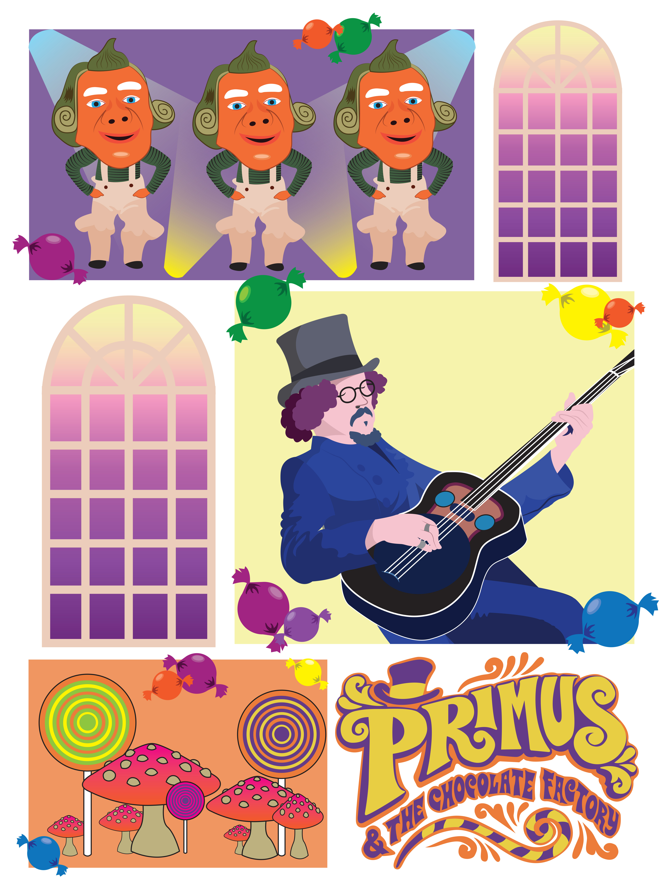
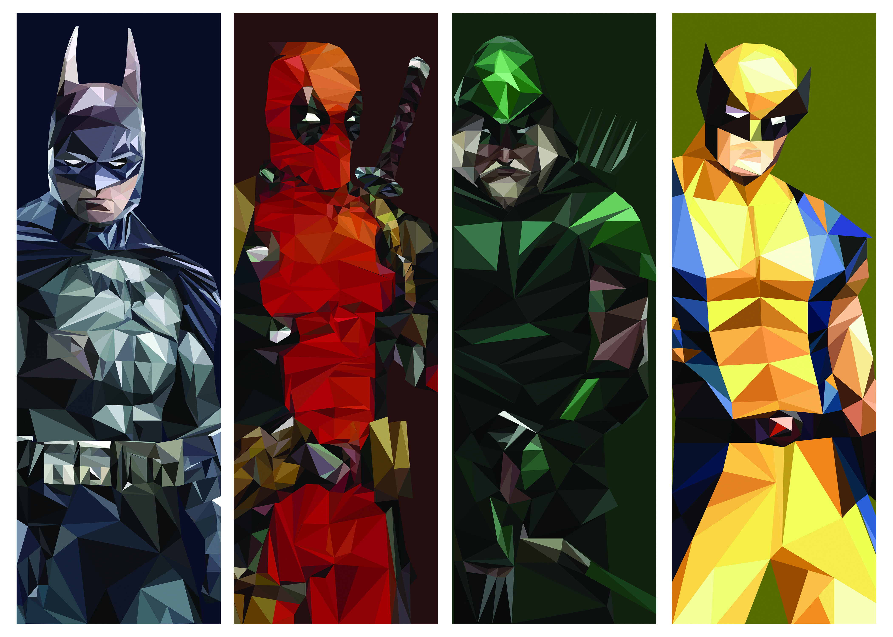

This is where the content will go.
For now I just want to put in some fake text so I can hash out the pictures and the Visual Model aspect of the process.
Illustration
This was from the first class I ever had in Adobe Illustrator back in 2011.
This was a rendering of a Nintendo Wii that I made in Adobe Illustrator.
I wanted to make a minimalist Firefly cover photo in my free time.
I made this as a Christmas present for a friend who loves Benedict Cumberbatch, so I made a poster for her that included a few of Cumberbatch's more well-known characters.
I also made this as a Christmas present for someone who had gone to a Primus and the Chocolate Factory concert.

This was a Christmas present for another friend. I used pictures of her own pets to create this illustration of them dressed as Game of Thrones Characters.
This was created in Adobe Illustrator as well as a present for a friend who liked these specific comic book characters.